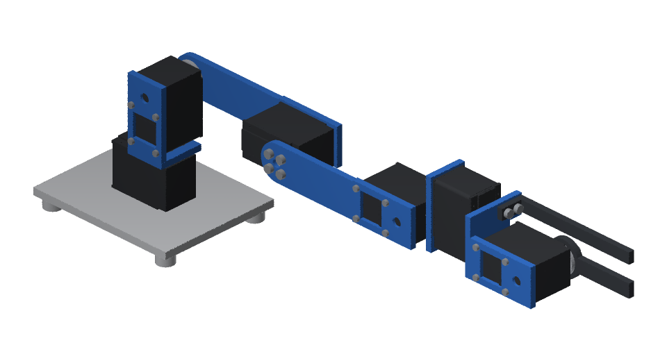
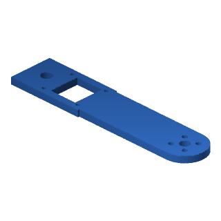
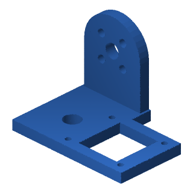
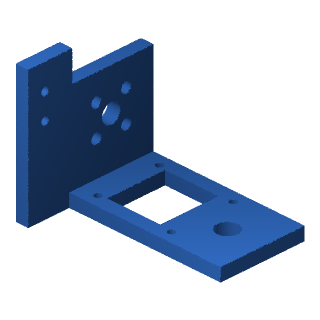
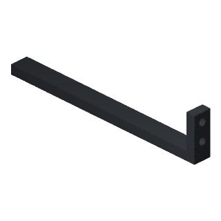
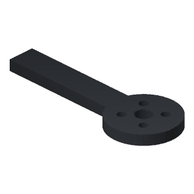

Arm · RobotDSL Team design
RobotDSL Arm
A desk arm of five joints and a gripper on six Feetech STS3215 servos: stretched out level, it reaches 365 mm and holds 0.1 kg there.
- Reach
- 365 mm
- Pieces
- 8
- Servos
- 6
- Bed
- 250 × 210 mm

Pieces to print
8 pieces of 8 shapes
- Material
- PLA, 100% infill
- Nozzle
- 0.4 mm
- Supports
- NoneEach piece as its file lies
- Bed
- 250 × 210 mm220 mm high
- Filament
- 132 g
| Picture | Piece | Count | Material | Laid flat | Each | Files |
|---|---|---|---|---|---|---|
 | Base plate | ×1 | PLA | 110 × 90 × 13 mm | 63.4 g | STLSTEP |
 | Shoulder bracket | ×1 | PLA | 54.4 × 28 × 32.9 mm | 9.2 g | STLSTEP |
 | Shoulder plate | ×1 | PLA | 134.7 × 27.8 × 4 mm | 15.1 g | STLSTEP |
 | Elbow plate | ×1 | PLA | 124.7 × 27.8 × 4 mm | 13.8 g | STLSTEP |
 | Wrist bracket | ×1 | PLA | 50.6 × 36.6 × 35.6 mm | 9.6 g | STLSTEP |
 | Palm | ×1 | PLA | 54.4 × 41.5 × 42.6 mm | 12 g | STLSTEP |
 | Fixed finger | ×1 | PLA | 93.7 × 8 × 20 mm | 4.3 g | STLSTEP |
 | Moving finger | ×1 | PLA | 68 × 26 × 4 mm | 4.4 g | STLSTEP |
What to buy
Parts
- Feetech STS3215 (12 V, ST-3215-C018)×6
- Clamps that hold the base plate to the table×2Stretched out level with 0.1 kg between its fingers, its centre of mass comes 124 mm beyond the outline its feet stand in, turned the way it comes nearest: clamp its base plate to the table, a clamp each side of the base's servo, or it tips over.
What drives its servos: a computer, an adapter for the servos' serial bus and a 12 V supply, which the arm does not carry; the design names no product of them.
Socket head cap screws ISO 4762
| Thread | Length | Count |
|---|---|---|
| M2 | 6 mm | 20 |
| M2 | 8 mm | 4 |
| M3 | 6 mm | 26 |
| In all | 50 | |
In simulation
In MuJoCo 3.15.0, each link weighing as its solids do and each servo turning as MuJoCo Menagerie's model of the Feetech STS3215 (12 V, ST-3215-C018) has it turn (up to 2.94 N m): stretched out level with 0.1 kg between its fingers, its base clamped, its servos hold it within 0.0010 rad, the shoulder's turning 1.02 N m; each joint turned through its range at 0.5 rad/s, the others at zero, follows within 0.012 rad; unclamped, stretched out level and turned the way it comes nearest to tipping, it tips over; its gripper, closed on a box of 0.1 kg, 10 x 12 x 16 mm, whose weight then pulls it out along the fingers, holds it within 0.01 mm.